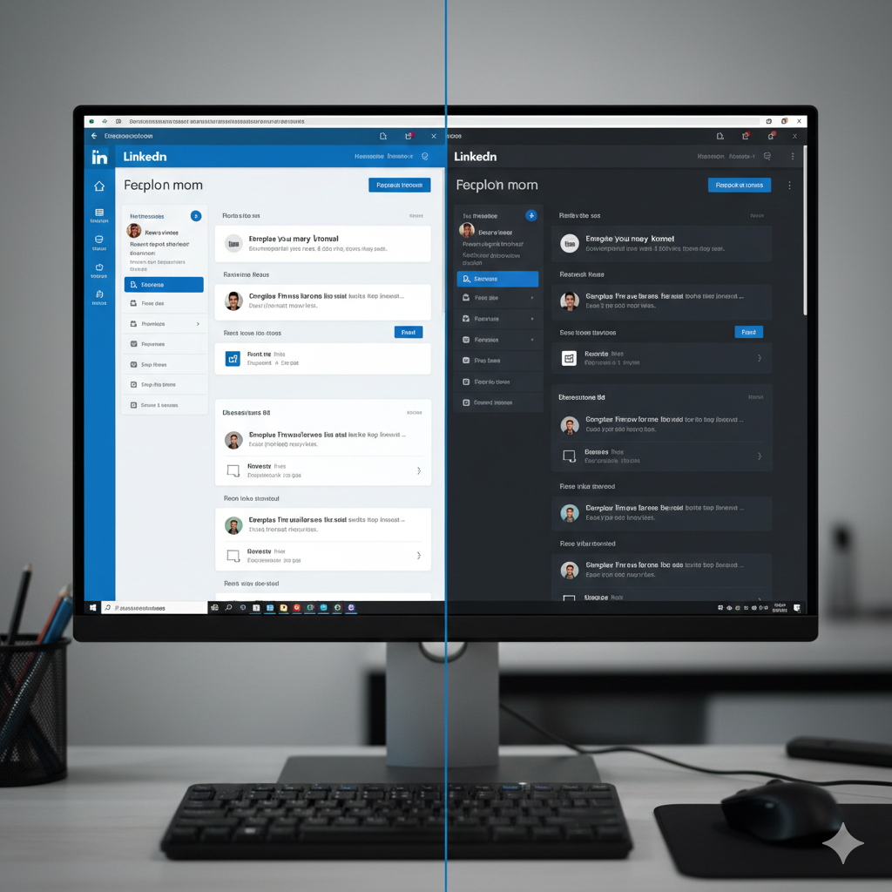

HOME
WEB DEVELOPMENT
This category includes web development projects that demonstrate clean UI design, responsive layouts, and practical frontend skills. It showcases website clones and a personal portfolio that reflect real-world web design and user interface principles.

Personal Portfolio Website
A personal portfolio website designed to showcase my projects, skills, and experience in machine learning, deep learning, and web development. The website is fully responsive, visually clean, and structured to help recruiters quickly understand my technical background and work.
LinkedIn Website Clone
A frontend clone of the LinkedIn website that replicates the layout, structure, and visual style of the original platform. This project focuses on responsive design, UI accuracy, and clean component-based structure using core frontend technologies.


ClickUp Website Clone
A static clone of the ClickUp landing page designed to practice modern SaaS-style UI layouts. The project highlights clean design, responsive sections, and structured content similar to real-world productivity tools.
Badam Agency Website Clone
A professional agency website clone created to demonstrate modern web design principles. The project includes a visually appealing hero section, services layout, and responsive design suitable for creative agencies and business websites. Created a fully responsive agency website clone using frontend best practices.

MACHINE LEARNING
This section contains machine learning projects that solve real-world problems using structured datasets. It includes data preprocessing, model training, evaluation, and deployment. Projects cover healthcare prediction systems and business analytics, demonstrating practical ML skills and problem-solving ability.
.png)
Heart Disease Prediction (ML)
A machine learning project that predicts whether a patient is at risk of heart disease based on medical data. It includes data preprocessing, exploratory data analysis, model training using Logistic Regression and Random Forest, and performance evaluation using standard metrics. Developed Random Forest and Logistic Regression models for heart disease prediction with preprocessing, EDA, and evaluation.
Heart Disease Prediction (Web App)
A deployed web application that allows users to enter health-related information and receive a heart disease risk prediction. The project demonstrates how machine learning models can be converted into real-world, interactive healthcare applications. Deployed a machine learning-based heart disease prediction system as an interactive web application.
.png)

Diabetes Prediction using SVM
A healthcare-focused machine learning project that predicts whether a person is diabetic using medical attributes such as glucose level and BMI. The project applies feature scaling, an SVM classifier, data visualization, and user-input-based prediction. Implemented a Support Vector Machine classifier for diabetes prediction with feature scaling and evaluation.
DEEP LEARNING
This category includes deep learning projects using CNNs and transformers for image classification and NLP tasks. It covers medical imaging, disease detection, and text classification, showcasing advanced model training, transfer learning, and deployment of deep learning solutions.

Cancer Detection (CNN & VGG16)
A deep learning project that detects cancer from medical images using both a custom CNN and transfer learning with VGG16. The project compares model performance and demonstrates how pre-trained models improve accuracy in medical imaging tasks. Built CNN and VGG16 transfer learning models for medical image classification.
Pneumonia Detection using CNN
A deep learning system designed to detect pneumonia from chest X-ray images. The project includes image preprocessing, CNN model training, and evaluation using accuracy, ROC curve, and classification metrics to assess medical diagnostic performance. Developed CNN-based pneumonia detection system with high accuracy and evaluation metrics.


Skin Cancer Detection (ResNet50)
A skin cancer classification project using transfer learning with ResNet50. The model analyzes dermatoscopic images to distinguish between cancerous and non-cancerous lesions, demonstrating the effectiveness of deep learning in dermatology support systems. Applied ResNet50-based transfer learning for skin cancer image classification.
Human Eye Disease Prediction
A deep learning-based medical application that predicts eye diseases from eye images. The project highlights the use of CNN models for image-based diagnosis and demonstrates deployment as an interactive web application.Developed and deployed a deep learning-based eye disease classification system.

.png)
AG News Topic Classification (BERT)
An NLP project that classifies news headlines into categories such as World, Sports, Business, and Sci-Tech. It uses a fine-tuned BERT transformer model and achieves high accuracy, showcasing real-world text classification capabilities. Fine-tuned a BERT transformer model for multi-class news topic classification achieving ~95% accuracy.
Email Spam Classification
A natural language processing project that identifies whether an email is spam or legitimate. The system analyzes text patterns and keywords to automatically filter unwanted emails, demonstrating practical NLP usage in cybersecurity and communication systems. Built and deployed an NLP-based email spam classification system.


Movie Recommendation System
A recommendation system that suggests movies to users based on preferences and similarity measures. The project demonstrates how machine learning can personalize content and improve user experience in entertainment platforms. Developed a movie recommendation system using similarity-based machine learning techniques.
RFM-Based Customer Clustering
A business analytics project that segments customers based on purchasing behavior using RFM analysis. The project helps identify high-value customers and supports data-driven marketing and customer retention strategies. Implemented RFM analysis and clustering algorithms for customer segmentation and business analytics.


AI-Assisted Disaster Response Prioritization
A real-world AI system that combines satellite image analysis and social media text processing to prioritize disaster-affected areas. The project demonstrates multi-modal AI, real-time decision support, and practical applications of AI in emergency response. Designed a multi-modal AI system combining CNN-based image analysis and NLP for disaster response prioritization.